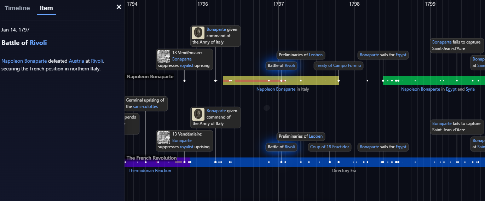
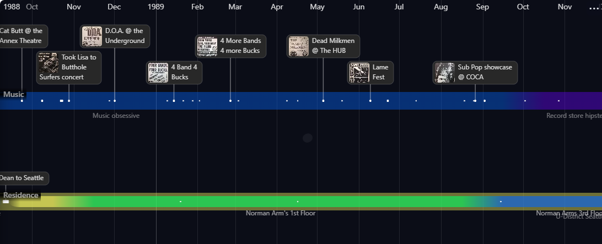
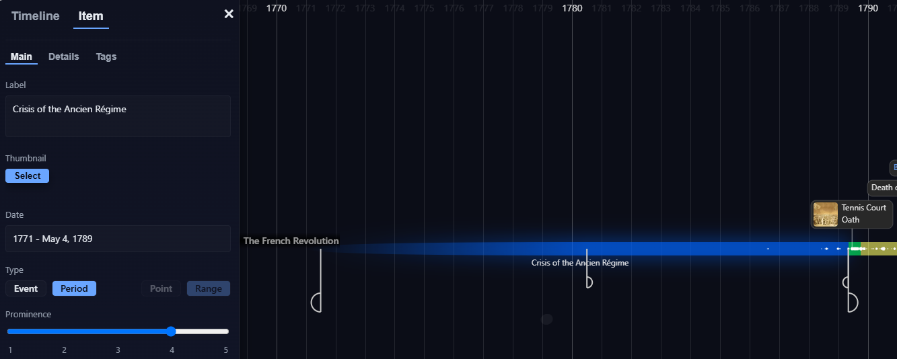
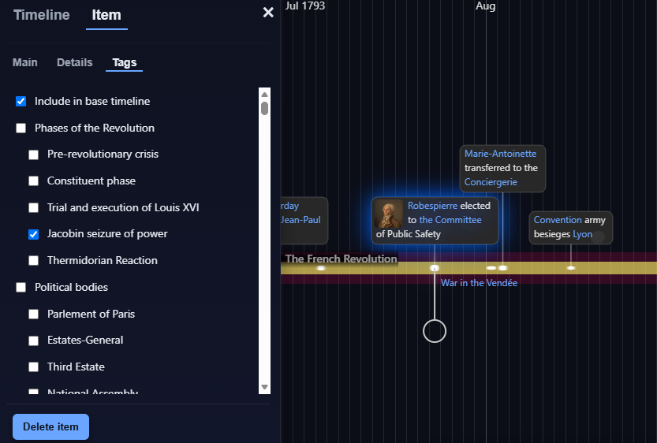
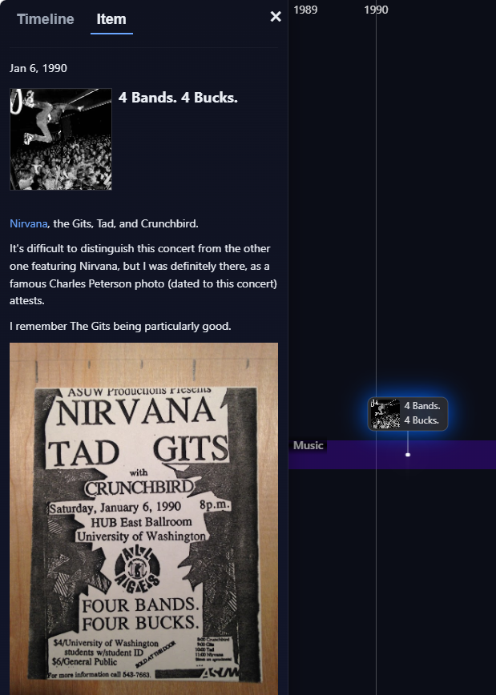
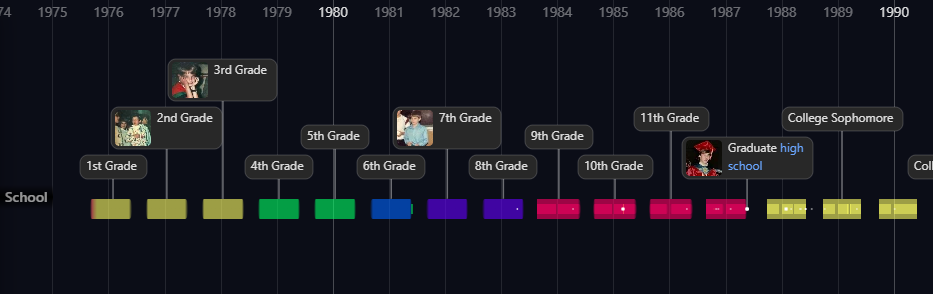
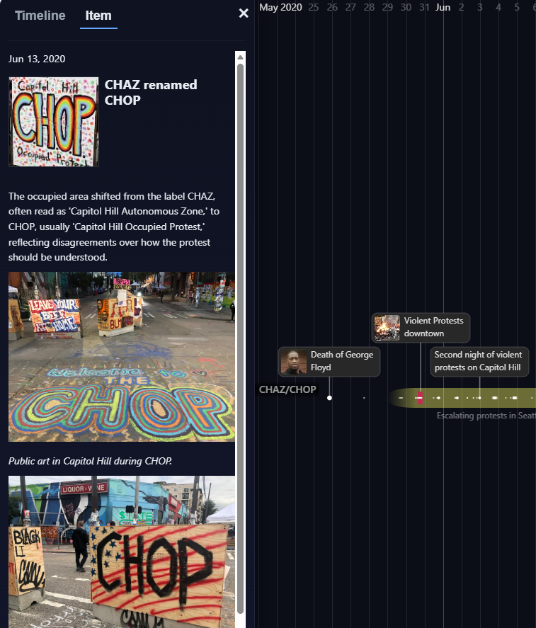

The open timeline
Beta
See time as a living structure.
OpenTL turns dates into a navigable visual narrative. Pan across centuries, zoom into minutes, surface only the events that matter, and connect stories without losing the larger context.
To create your own timeline, open the app, choose Sign in from the upper-right menu, then select Sign up.

Broad historical arc
Focused narrative
One canvas
Multiple levels of detail
Continuous context
Why OpenTL
Most timeline tools record dates. OpenTL reveals relationships.
Real stories are not tidy rows in a spreadsheet. Some moments are known to the minute; others only to the year. Some events dominate an era, while others become meaningful only when you zoom in.
OpenTL is built for that complexity. It combines the simplicity of a visual timeline with the depth of a research tool—without forcing every event into the same shape.
Designed for temporal thinking
A flexible model for stories that unfold over time.
OpenTL gives you a small set of powerful visual ideas—precision, prominence, periods, tags, and links—and lets you combine them naturally.
01
Zoom changes what the story says.
Pull back for the 50,000-foot view, then move smoothly toward the details. Major events remain visible while finer context fades into view only when there is room for it.
- Pan continuously across time
- Zoom from years to minutes
- Reveal detail according to prominence

02
Dates can be exact, approximate, or gradual.
Define an event using the precision actually known: year, month, day, hour, or minute. Use ranges for periods, then taper or fade their boundaries to communicate uncertainty or changing significance.
- Point-in-time events and periods
- Mixed precision on the same canvas
- Fading and tapered temporal boundaries

03
Tags become alternate ways to read the same timeline.
Organize events into your own hierarchy of people, places, themes, phases, or institutions. Open a tag as a sub-timeline to create a focused narrative while preserving the surrounding chronology.
- Custom hierarchical categories
- Independent tag membership
- Sub-timelines without duplication

04
Details stay rich without crowding the canvas.
Add thumbnails, formatted text, source links, images, and explanatory material to any event. The timeline stays legible while the full story remains one click away.
- Thumbnail-supported labels
- HTML-formatted descriptions
- Links within and beyond a timeline

Built for many kinds of stories
History is one use case. Time is the real medium.
Use OpenTL anywhere the order, duration, overlap, or significance of events matters.
History & research
Build an interpretation, not just a chronology.
Trace movements, people, governments, conflicts, and ideas—then open a focused narrative without losing the era around it.

Personal history
See the arcs in your own life.
Chronicle education, careers, family, projects, places, and turning points in a form made for looking back.

Current events
Give the present a memory.
Collect developments over days, months, or years and show how one event changes the meaning of another.
From blank canvas to living timeline
Start simple. Add depth only when the story needs it.
You do not need to design a data model before you begin. Add a few events, place them in time, and refine the structure as patterns emerge.
Open the app- 1Create a timeline
Give the subject a title and start with the broadest events or periods.
- 2Set dates and prominence
Use the precision you actually know and decide what should remain visible when zoomed out.
- 3Add context
Attach details, images, tags, and links where they improve understanding.
- 4Navigate the story
Pan, zoom, and open tag-based views to test how the narrative reads at every scale.
OpenTL.app · Beta
Your story already has a timeline.
Make it visible.
Browse public timelines immediately, or create an account and begin building your own.
Try OpenTL
No installation required.